📖 11/17 漫畫版「趣味は〜ことです・辞書形」
全 12 頁日漫複習（baoyu-comic --art manga --tone warm）。主角ハルト（虛構的語言學校學生）跟ミキ先生學 辞書形（1・2・3組）、趣味は〜ことです、〜ことができます，同時準備 11/20 結核檢診。氣泡文字可能糊掉或有錯字，請一律以圖下日語列為準（▶ 播放／⧉ 複製）。
角色設定（一致性）

ハルト：成人語言學校學生（晚 30 歲、眼鏡、海軍藍外套），虛構角色。
ミキ先生：溫柔的語言學校老師（鼠尾草綠開襟衫、櫻花徽章）。
畫風：日漫 clean ink、screentone、速度線、表情符號、日語氣泡＋中文對照。
圖上小錯誤備註（請以圖下日語列為準）： P01 第 2 格「女性は着替えの部屋があります」應該是ミキ先生說的，圖上畫成ハルト； P05 中文框「字母」應為「字典」，「辭書形」寫成了簡體； P07 第 4 格中文多了一個「請」字； P09 標題寫成「趣味は〜ことができます」，本頁其實是「趣味は〜ことです」。
12 頁目錄
P01 結核検診のお知らせ
結核検診のお知らせ
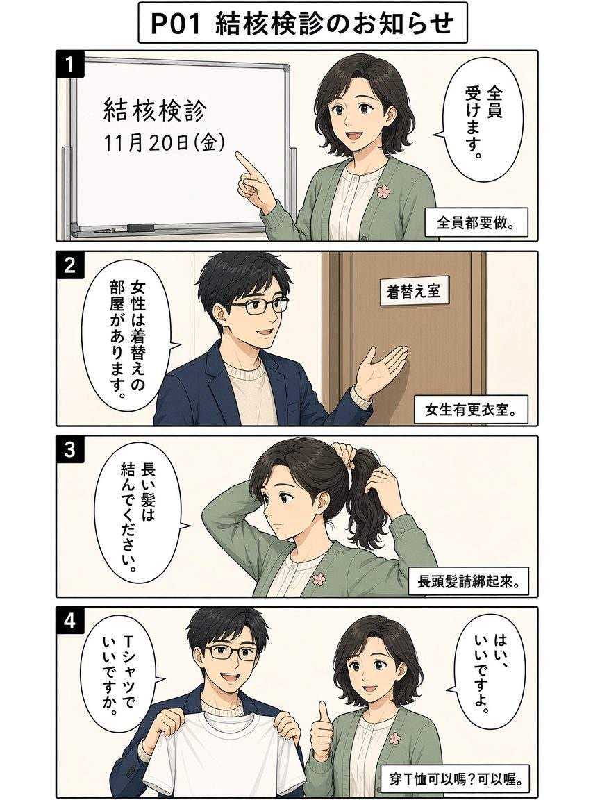
ミキ先生補充 11/20（金）結核檢診的細節：全員都要做、女生有更衣室、長頭髮要綁起來、穿 T 恤就可以。
P02 休んだら？
休んだら？
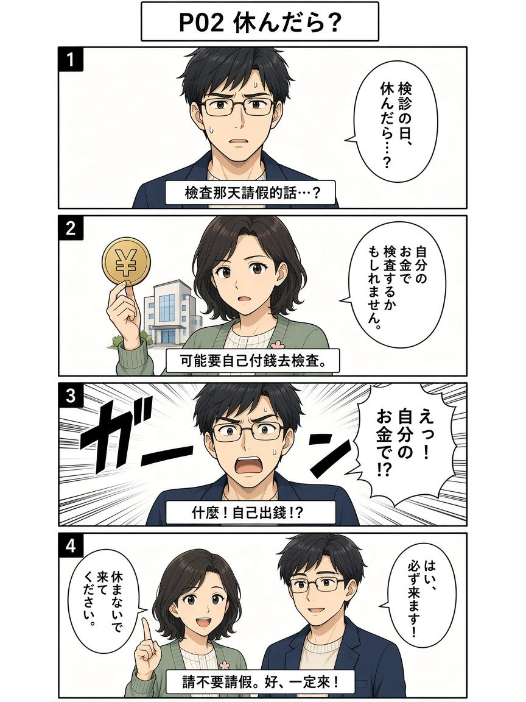
檢診那天請假的話，可能要自己出錢去醫院檢查，所以一定要來。
P03 今日の目標
今日の目標
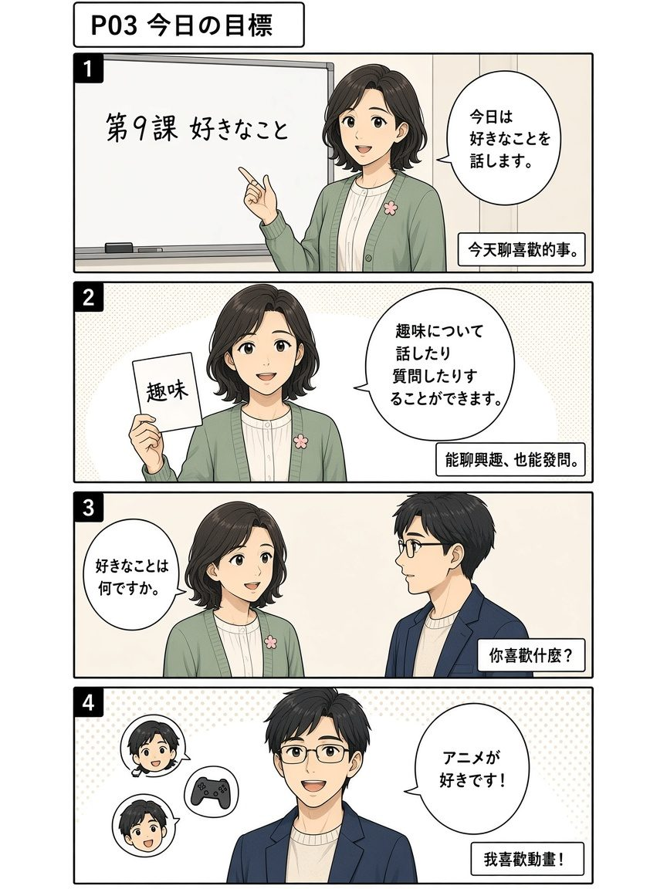
第 9 課的目標：能用日語聊自己的興趣，也能問別人。
P04 よくある間違い
よくある間違い
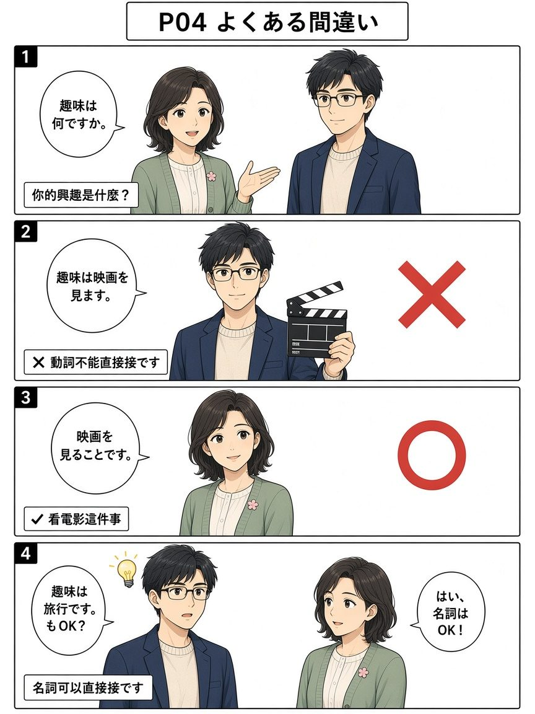
課堂上最常見的錯：趣味は＋ます形 ✗。動作要變成「辭書形＋こと」；名詞可以直接接 です。
P05 辞書形って何？
辞書形って何？
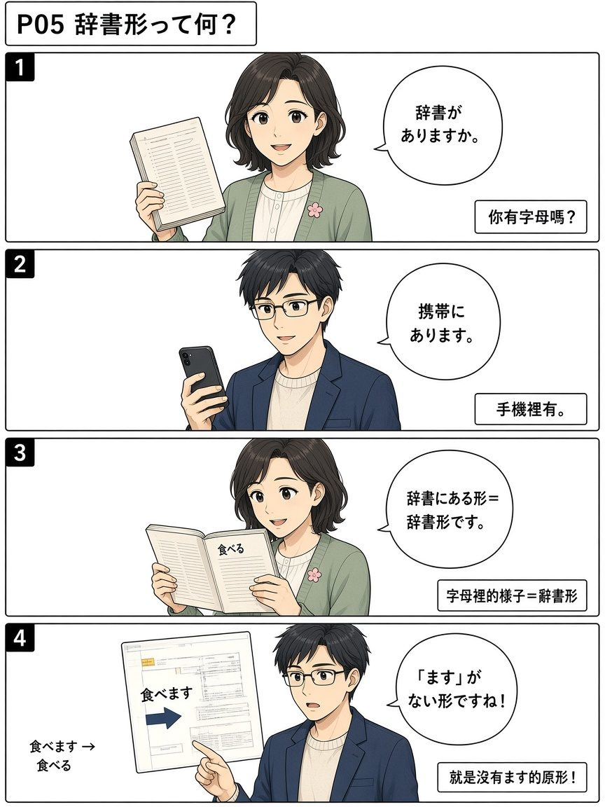
辭書形＝字典裡查得到的樣子，也就是動詞沒有ます的原形。
P06 1グループ い段→う段
1グループ い段→う段
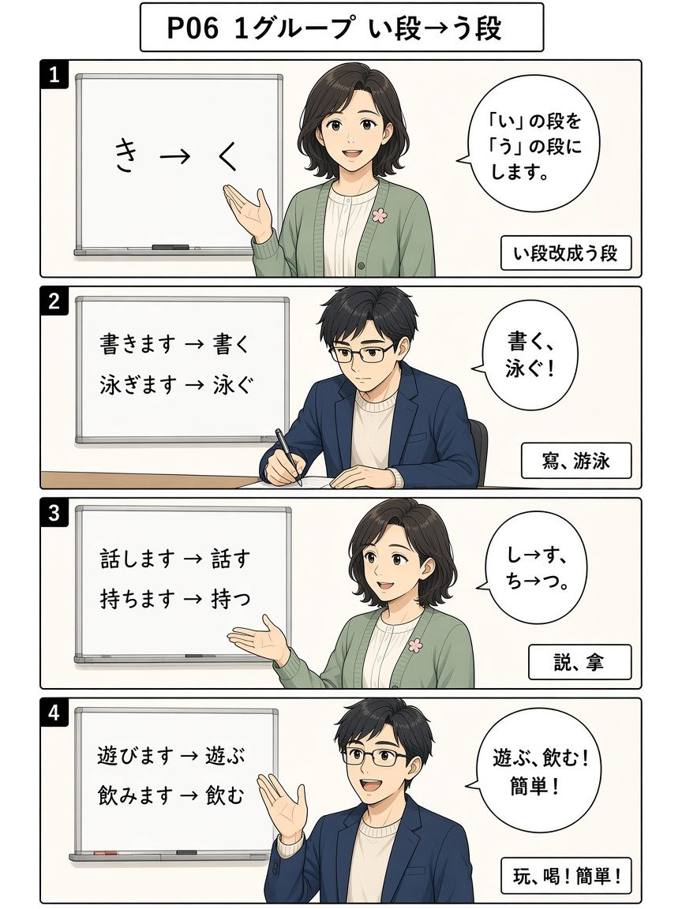
第 1 組：ます 前面的 い 段音，往下移一格變成 う 段音。
P07 2グループ ます→る
2グループ ます→る
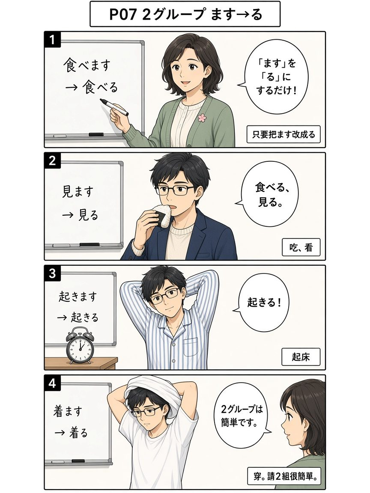
第 2 組最簡單：把 ます 換成 る 就好。
P08 3グループはスペシャル
3グループはスペシャル
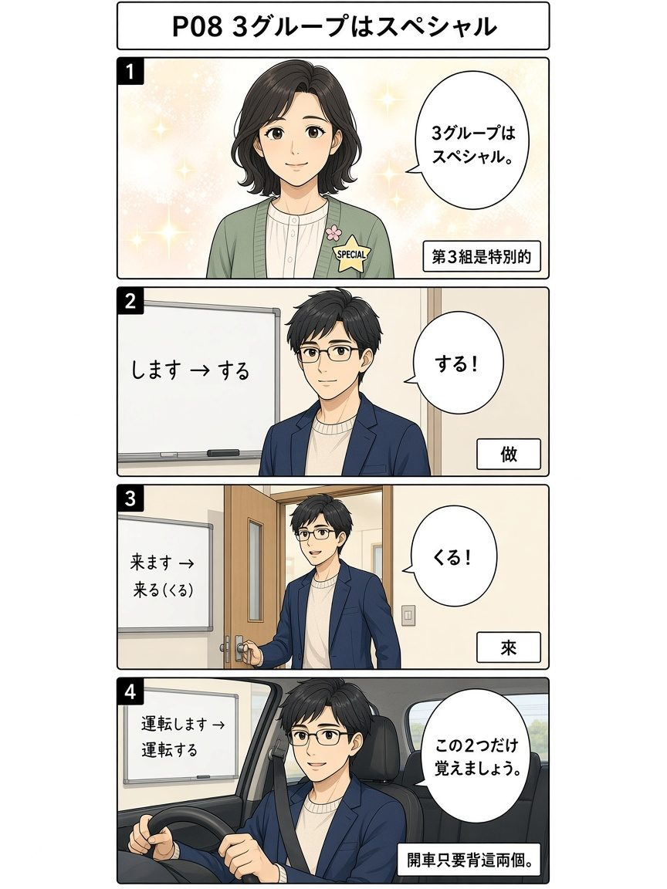
第 3 組只有兩個，直接背：する・くる（運転します → 運転する 也算這組）。
P09 趣味は〜ことです
趣味は〜ことです
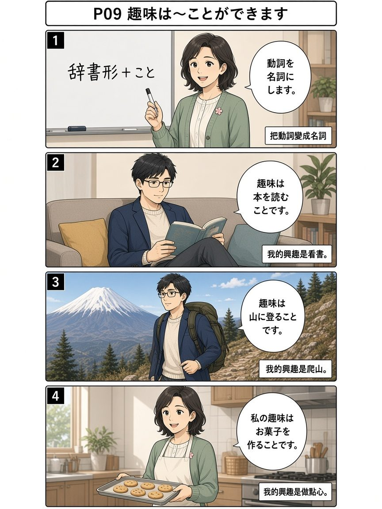
辭書形＋こと 把動作變成「名詞」，就能放在「趣味は〜です」裡。
P10 誰の絵が好きですか
誰の絵が好きですか
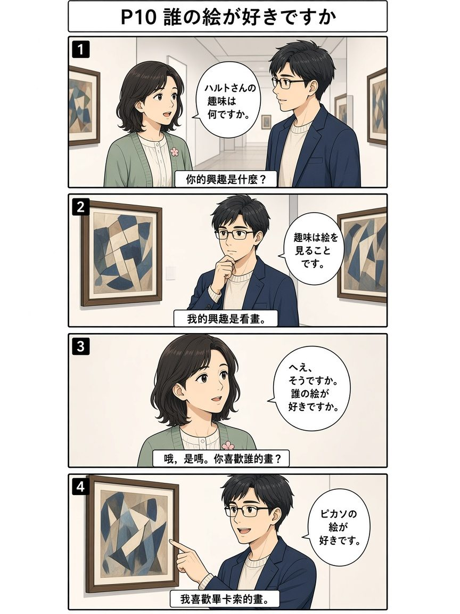
課堂反覆練習的問答：先說興趣，再追問「誰的…」。
P11 〜ことができます
〜ことができます
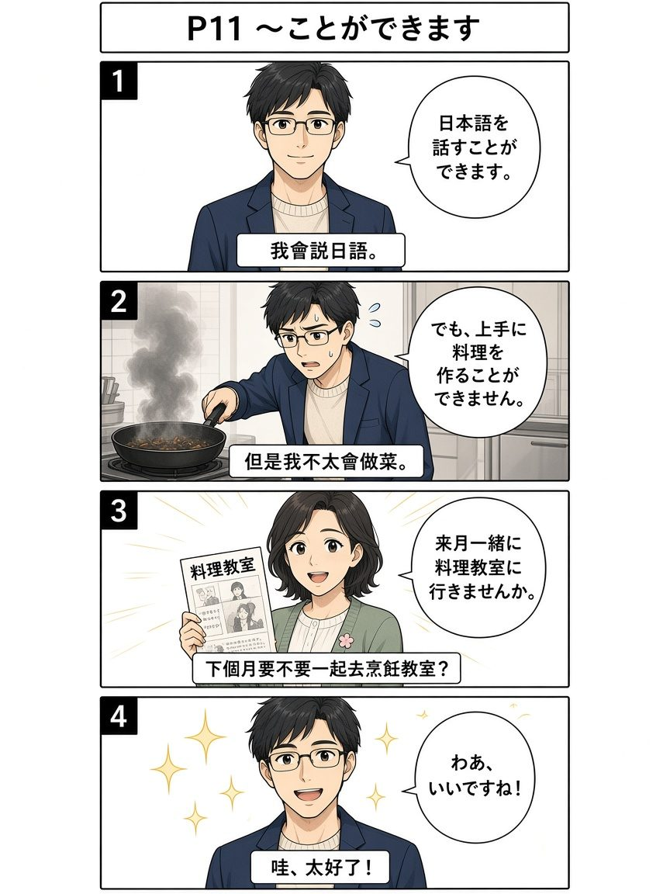
辭書形＋ことができます＝「能／會做〜」；否定 ことができません。
P12 まとめ＆検診の準備
まとめ＆検診の準備
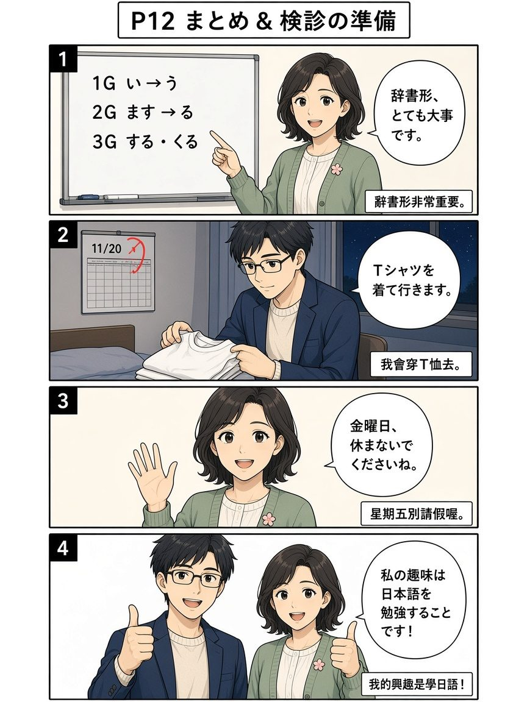
辭書形三組＋こと 是今天最重要的；週五檢診穿 T 恤、不請假。